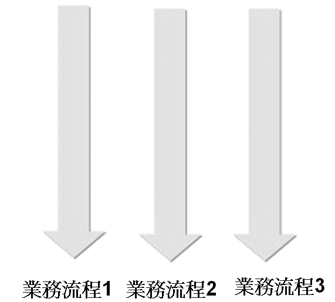
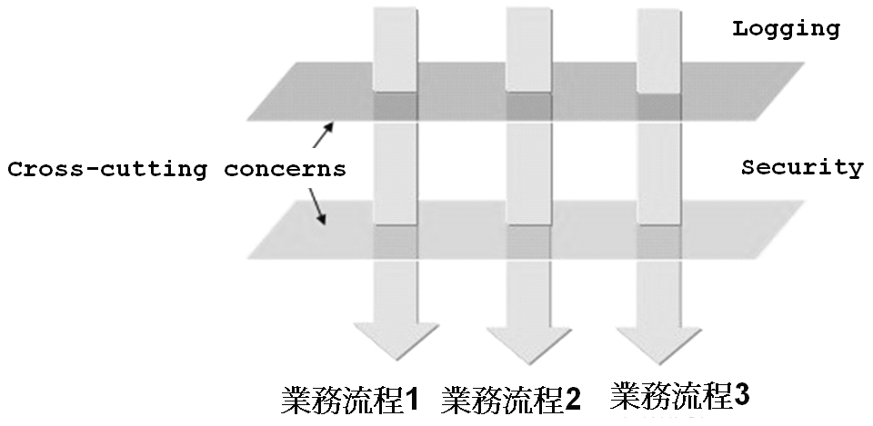
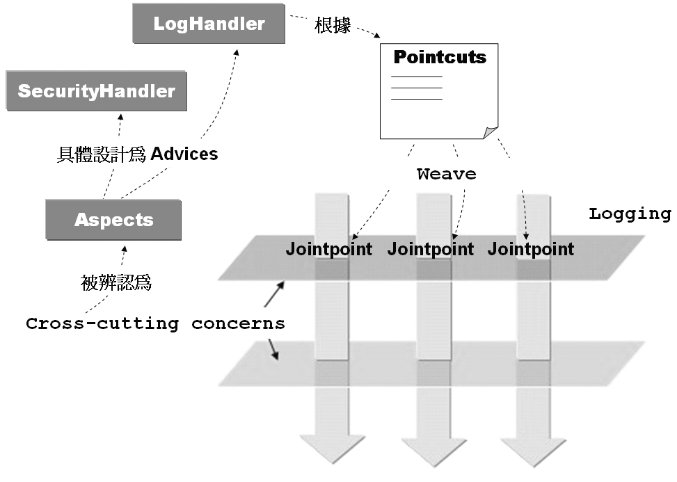

AOP全名為Aspect-Oriented Programming，有關於AOP的許多名詞術語都過於抽象，單從字面上並不容易理解其名詞意義，這邊將以之前介紹代理機制的範例來逐一對照以介紹AOP的術語與觀念：
在DynamicProxyDemo專案的例子中，記錄的
動作原先被橫切（Cross-cutting）入至HelloSpeaker本身所負責的商務流程之中，另外類似於日誌這類的動作，如安全
（Security）檢查、交易（Transaction）等系統層面的服務（Service），在一些應用程式之中常被見到安插至各個物件的處理流程之
中，這些動作在AOP的術語中被稱之為Cross-cutting concerns。
以圖片說明可強調出Cross-cutting concerns的意涵，例如原來的商務流程是很單純的： Cross-cutting
concerns若直接撰寫在負責某商務的物件之流程中，會使得維護程式的成本增高，例如若您今天要將物件中的記錄功能修改或是移除該服務，則必須修改所
有撰寫曾記錄服務的程式碼，然後重新編譯，另一方面，Cross-cutting
concerns混雜於商務邏輯之中，使得商務物件本身的邏輯或程式的撰寫更為複雜。
現在為了要加入日誌（Logging）與安全（Security）檢查等服務，物件的程式碼中若被硬生生的寫入相關的Logging、Security程式片段，則可使用以下圖解表示出Cross-cutting與Cross-cutting concerns的概念：
 Cross-cutting concerns若直接撰寫在負責某商務的物件之流程中，會使得維護程式的成本增高，例如若您今天要將物件中的日誌功能修改或是移除該服務，則必須修改所 有撰寫曾日誌服務的程式碼，然後重新編譯，另一方面，Cross-cutting concerns混雜於商務邏輯之中，使得商務物件本身的邏輯或程式的撰寫更為複雜。
將散落於各個商務物件之中的Cross-cutting concerns收集起來，設計各個獨立可重用的物件，這些物件稱之為Aspect，例如在 動態代理 中
將日誌的動作設計為一個LogHandler類別，LogHandler類別在AOP的術語就是Aspect的一個具體實例，在AOP中著重於
Aspect的辨認，將之從商務流程中獨立出來，在需要該服務的時候，縫合（Weave）至應用程式之上，不需要服務的時候，也可以馬上從應用程式中脫
離，應用程式中的可重用元件不用作任何的修改，例如在 動態代理 中的HelloSpeaker所代表的角色就是應用程式中可重用的元件，在它需要日誌服務時並不用修改本身的程式碼。
另一方面，對於應用程式中可重用的元件來說，以AOP的設
計方式，它不用知道處理提供服務的物件之存在，具體的說，與服務相關的API不會出現在可重用的應用程式元件之中，因而可提高這些元件的重用性，您可以將
這些元件應用至其它的應用程式之中，而不會因為目前加入了某些服務而與目前的應用程式框架發生耦合。
Aspect的具體實作稱之為Advice，以日誌的動作而言，Advice中會包括真正的日誌程式碼是如何實作的，像是動態代理 中的LogHandler類別就是Advice的一個具體實例，Advice中包括了Cross-cutting concerns的行為或所要提供的服務。
Aspect在應用程式執行時加入商務流程的點或時機稱之為Joinpoint，具體來說，就是Advice在應用程式中被呼叫執行的時機，這個時機可能是某個方法被呼叫之前或之後（或兩者都有），或是某個例外發生的時候。
Pointcut是一個定義，藉由這個定義您可以指定某個Aspect在哪些Joinpoint時被應用至應用程式之上。具體的說，您可以在某個定義檔中撰寫Pointcut，當中說明了哪些Aspect要應用至應用程式中的哪些Joinpoint。
一個Advice被應用的對象或目標物件，例如 動態代理 中的HelloSpeaker就是LogHandler這個Advice的Target。
對於一個現存的類別，Introduction可以為其增加行為，而不用修改該類別的程式，具體的說，您可以為某個已撰寫、編譯完成的類別，在執行時期動態加入一些方法或行為，而不用修改或新增任何一行程式碼。
在《Expert One-on-One J2EE
Development WIthout EJB》一書中，Rod Johnson、Juergen
Hoeller在第八章中有提到，AOP的實作有五個主要的策略： Dynamic Proxies、Dynamic Byte Code
Generation、Java Code Generation、Use of a Custon Class Loader、Language
Extensions。
Advice被應用至物件之上的過程稱之為縫合（Weave），在AOP中縫合的方式有幾個時間點：編譯時期（Compile time）、類別載入時期（Classload time）、執行時期（Runtime）。
結合 動態代理 的實例，將以上介紹過的AOP相關名詞具體的使用圖片來加以表示，有助於您對每一個名詞的理解與認識：  |